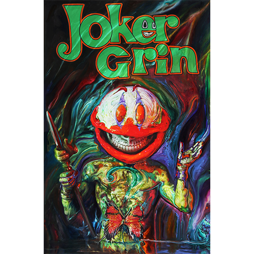
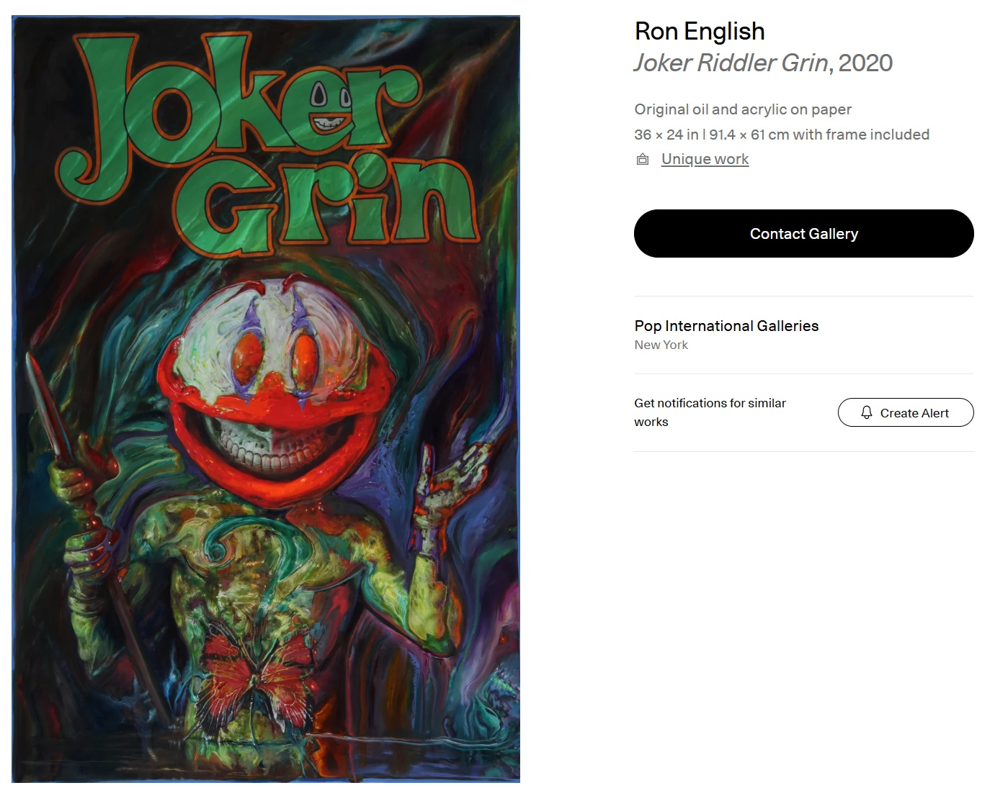
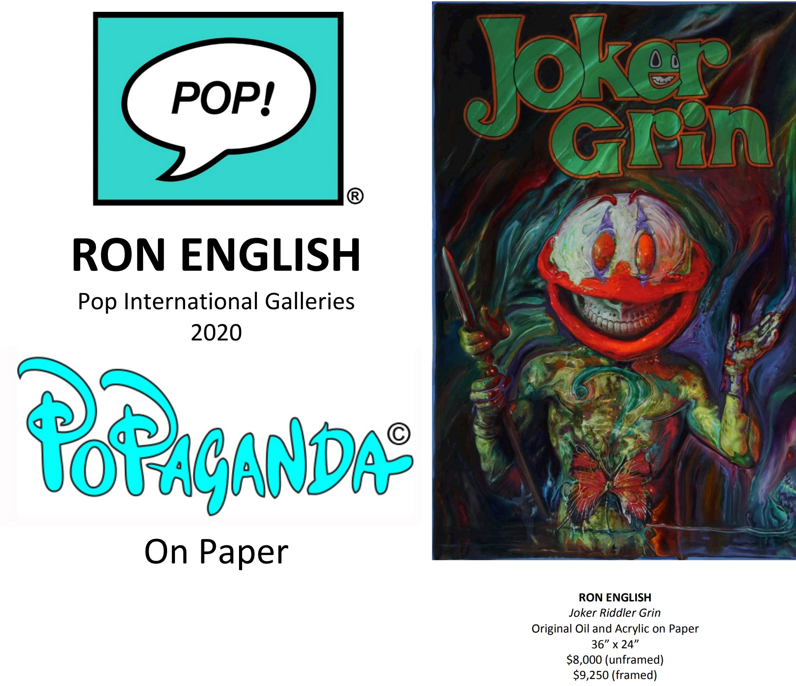
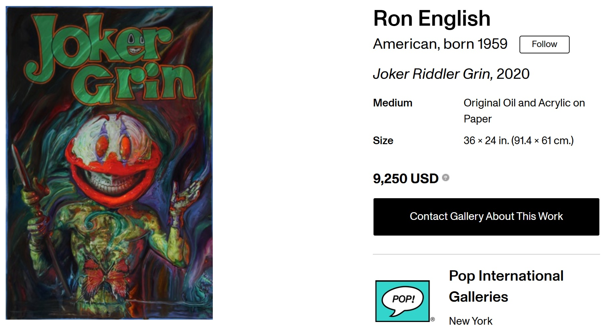
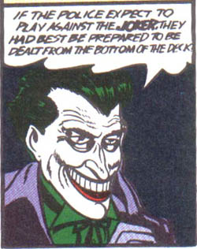

Exhibitions
POPaganda on Paper, Pop International Galleries, New York, New York, US, September 17–October 15, 2020.
Literature
POPaganda on Paper, Pop International Galleries, online exhibition catalogue, 2020.
Notes
This work appears on Artsy’s artwork page as Joker Riddler Grin, where it is listed as a 2020 original oil and acrylic on paper measuring 36 × 24 inches (91.4 × 61 cm), unique, hand-signed by the artist, with frame included.
Pop International Galleries’ POPaganda on Paper catalogue also lists the work as original oil and acrylic on paper, 36 × 24 inches, reversing the dimension order used in the current catalogue record.
Artsy lists the work as hand-signed by the artist; no signature is visible on the front in the available documentation.
The composition references the Joker, the DC Comics character associated with Batman.
Ancillary Documentation




